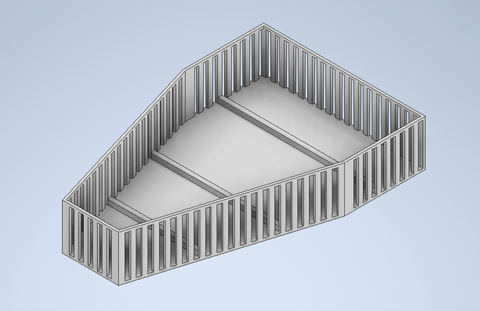
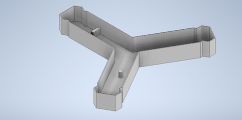
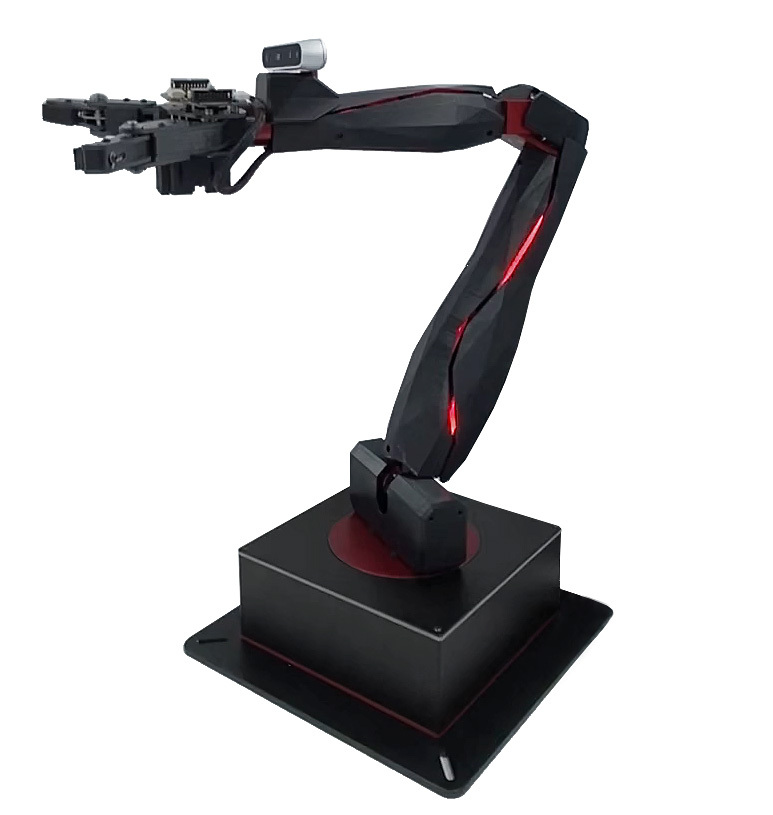
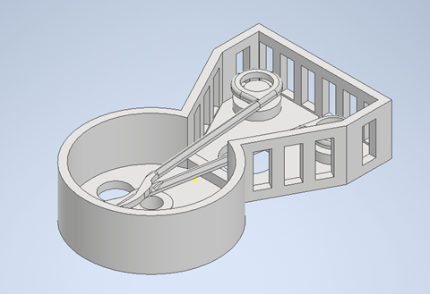

Project 2:
Renewable Energy Challenge
TL;DR
Soft Skills
Technical Skills
Time management

Autodesk Inventor 2022 (CAD)
Communication
3D Printing
Organization

Python
Overview
In project 2, "Get a Grip", we had a team of four people divided into two subteams of two people. These subteams consisted of one for CAD and one for programming, similar to how many real-world employers organize workers. We were tasked with designing a container for surgical tool sterilization and programming a robotic arm to move said container into an autoclave. The premise of this project was to help healthcare facilities in northern Canada by reducing the amount of human labour needed to sterilize surgical tools
Function
- Sterilize surgical tools.
Objectives
- Minimize human interaction.
- Container design should be easy to drop the tool into while still holding it securely.
- Container design should be able to be securely gripped by the robotic arm.
Constraint
- The container's design must fit within a given footprint.
A hopsital in northern Canada. Sourced from rcinet.ca.
Design Process

Preliminary prototype designed by Benjamin Lapensee

Preliminary prototype designed by Ziti Zhou
- The CAD subteam started by designing two wildly different prototypes then combining what was good and discarding what wasn't.
- In the final design, we reduced overhangs, simplified geometry, tightened tolerances, and added holes on the bottom for drainage.
- Reducing overhangs and simplifying geometry allowed for faster print times and a cleaner overall design, as no support structure was needed in the end.
- Tighter tolerances allowed for the surgical scissors to slide into posts easily while still keeping them snug enough to not fall out if tilted 90 degrees.
- Drainage holes allowed for contaminated water to be drained, aided in the prevention of rust and aided in the drying process.
Challenges Encountered
What They Were
The biggest issue I encountered while working with python and Quanser Interactive Labs was troubleshooting more than anything. More often than not I'd open both programs to start working on the programming, only to discover it had broken overnight.
We also had issues with optimizing the 3d print times to stay under the 2 hour time limit and keep the 3d-print to under 350 grams.
How They Were Overcame
When dealing with Quanser and Python, I found that the best help was having patience and once I found a solution, writing down what I did to fix it in case it happened in the future, something that happened more than once.
As for the 3d-printing, we had to make decisions to remove complex geometry like fillets and reducing the number of overhangs that would need support material. Through these efforts, the container was kept under 350 grams and within the 2 hour print time all while keeping within the specified footprint.
What I Contributed

The "Q-arm" used in the project. Sourced from quanser.com.
- Single handedly wrote the program for the "physical bonus" challenge. This allowed me to transfer my textbook knowledge of Python into a real-world application. Unfortunately, I was not allowed a testing station until ten minutes before the deadline and due to headaches of a bug I hadn't encountered before was unable to finish in time despite the program working digitally.
- Wrote all of the main program and carried the computing team. From this, I gained insight into how computer software can be written with digital models and transferred into a real world use.
- Wrote the majority of our final technical report. This allowed me to learn how to write reports in a technical field like engineering, a key aspect of any job in the field. I gained a deeper understanding of IEEE citations and employed software like Zotero to streamline the process.
A Rough Timeline
Milestone 1
- Understanding the problem assigned and the accompyaning objective, functions, and constraints.
- Delegated team roles and created an agenda for who would be doing what work.
Milestone 2
- Computing subteam made a preliminary flowchart for the robotic arm's workflow. In doing so, the computing subteam got a headstart and greater understanding of the problem at hand and how best to tackle it.
- Modelling subteam created preliminary sketches of the container design and how the robotic arm could interact with it. This allowed for a deeper understanding of what direction to start off in.
Milestone 3
- Computing subteam wrote functions to correctly identify the location of each autoclave's position to drop the container into and to move the autoclave with potentiometers.
- Modeling subteam used Autodesk Inventor to develop a container prototype that fit within the given footprint and maintain a weight of under 350 grams.

The Aforementioned container designed by Benjamin Lapensee and Ziyi Zhou
Milestone 4
- Computing subteam finalized the program to showcase one full cycle of the robotic arm picking up a container, moving to an autoclave and dropping it off, then returning back to the "home" position.
- Modelling subteam finalized the container's design by making small adjustments based on peer feedback and printed the container.
- Both teams gave brief presentations to upper years and in turn received feedback for areas of improvement.
Reflection TL;DR
- Adding some sort of lid on the container would allow for peace of mind that the surgical tool wouldn't fall out if it were dropped.
- Troubleshooting software issues is always a hassle, but the more practice I get the more proficient I become at solving said issues in the future.
- By always seeking to learn new ideas and try new suggestions out, I was able to streamline the coding process by using VS Code instead of the built-in Python shell IDE.
- Since I was forced to step outside of my comfort zone by programming in Python instead of C++ or JS, there were certainly issues that arose. I learned a new programming language outside of a classroom setting and was able to deepen my understanding of general coding concepts.
- In the future, I would love to learn more about Python and deploy it in more of my projects, despite being more comfortable in other languages.
Reflection (Long Format)
This project allowed me to learn a lot about Python and the Quanser Labs software. In the beginning, I had concerns with how Quanser would work considering how we were told to do all our programming in the built-in python IDE, but I was able to work through this in the end. I stepped outside of my comfort zone by learning Python, only having experience with C++ and JavaScript before this. I was also able to learn about 3D printing and how to optimize designs for printing as a result of the strict limitations placed on the container's weight and print time. In the future however, I'd like to learn more about 3D printing in general and expand my knowledge on the subject, learning what tricks I can use to design better parts in the future. I would also like to learn more about Python, as my exposure to it thus far has been considerably more pleasant than C++, especially when it comes to syntax and data types.